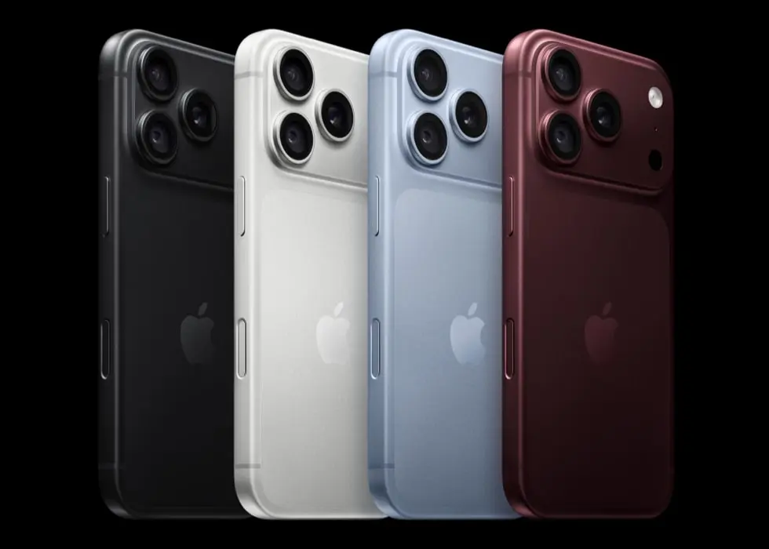

Apple · Field note 007
iPhone 18 Pro puts creative control first
A variable-aperture camera leads a Pro generation built around deliberate photography, sustained performance, and longer battery life.

Apple’s latest Pro phones make their clearest argument through the camera: more of the photographic process is moving back into the user’s hands.
The iPhone 18 Pro and iPhone 18 Pro Max introduce a 48-megapixel Fusion Main camera with a physical variable aperture. Six laser-cut blades move between aperture settings, automatically balancing light and depth of field or allowing the photographer to choose from four settings in the Camera app.
That mechanical change gives the camera room to approach different scenes differently. Apple says it can open to ƒ/1.48 for low-light work, use ƒ/1.8 for portraits, or narrow to ƒ/4 to keep more people in a group photo sharp. A new sensor and computational imaging pipeline are intended to improve detail, while updated Photographic Styles add texture and grain controls.
A more deliberate camera
A new Pro controls interface brings aperture, shutter speed, white balance, and a live histogram into one customizable view. Video gains post-capture Cinematic effects at up to 60 frames per second, while Time-lapse can record in 4K Dolby Vision HDR. Audio Mix also receives upgraded voice processing and music isolation.
Apple Reference Image addresses a different part of modern photography: trust. In Reference mode, the sensor signs the data it captures, and Private Cloud Compute develops that record into what Apple describes as an unalterable reference image. It can sit beside an edited photo in the Photos app so viewers can compare the finished result with what the sensor originally saw.
Performance designed to last
Both phones run on A20 Pro, built on a 2-nanometer process. Apple says the chip offers 50 percent more memory bandwidth than A19 Pro, a 7-core GPU that is up to 40 percent faster, and a Dual 16-core Neural Engine with twice the AI processing capability of its predecessor.
A redesigned vapor chamber connects directly to the chip package. With three times the surface area of the previous system, Apple says it enables up to 40 percent better sustained performance than iPhone 17 Pro. The phones also include the N1 wireless chip for Wi-Fi 7, Bluetooth 6, and Thread, plus Apple’s C2 cellular modem system.
The Dynamic Island is smaller and can display as many as three Live Activities at once. Siri AI arrives in beta with iOS 27, using personal context, onscreen awareness, and a new Camera mode while relying on on-device processing and Private Cloud Compute where possible.
Battery, finishes, and price
Apple rates eSIM-only models for up to 36 hours of video playback on iPhone 18 Pro and 45 hours on Pro Max. The smaller model can reach 50 percent charge in about 15 minutes by cable, while both models support faster wireless charging.
The lineup comes in black, silver, glacier, and burgundy, with storage from 256GB to 2TB. U.S. pricing starts at $1,199 for iPhone 18 Pro and $1,299 for iPhone 18 Pro Max. Both became available September 18.
The result is a Pro update that concentrates on control rather than spectacle. The variable aperture is the headline, but the supporting changes in thermal design, battery life, and image verification make the camera feel like part of a broader professional system.